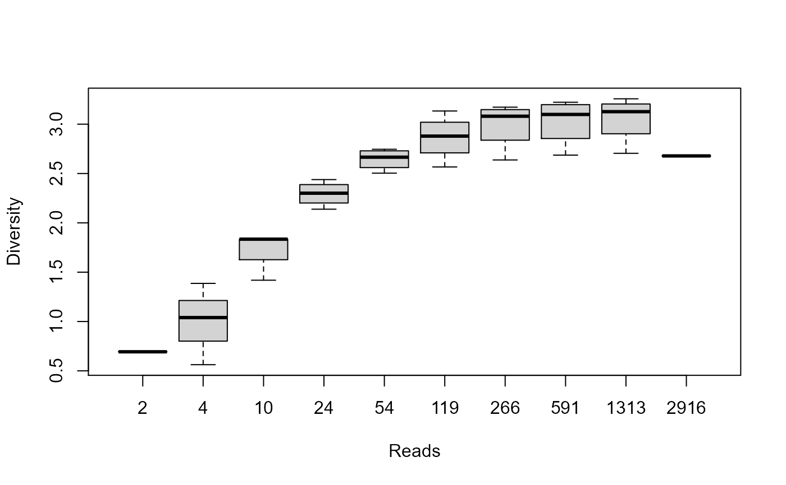

Estimate the diversity of each sample.
alpha.div( biom, rarefy = FALSE, metrics = "all", long = FALSE, md = FALSE, safe = FALSE )
| biom | A |
|---|---|
| rarefy | Control how/whether rarefactions are done prior to alpha diversity computations. Options are:
|
| metrics | Character vector of one or more of the following:
|
| long | Pivot the returned data to long format?
|
| md | Include metadata in the output data frame? Options are:
|
| safe | Should autogenerated columns be prefixed with a "." to avoid conflicting with metadata column names? (Default: FALSE) |
A data frame of four diversity values for each sample in
biom. The column names are Sample, Depth and the
diversity metrics: OTUs, Shannon, Chao1,
Simpson, and InvSimpson. The row names are the sample
names, except when multiple rarefactions are done.
#> Sample Depth OTUs Shannon Chao1 Simpson InvSimpson #> HMP01 HMP01 1660 49 1.741153 59.08333 0.5668414 2.308623 #> HMP02 HMP02 1371 75 2.587403 104.38889 0.8133914 5.358811 #> HMP03 HMP03 1353 75 2.950982 90.04167 0.8936622 9.403996 #> HMP04 HMP04 1895 83 3.255785 93.32143 0.9323645 14.785121 #> HMP05 HMP05 3939 67 1.462651 127.75000 0.5252255 2.106263 #> HMP06 HMP06 4150 105 3.087615 131.88889 0.9103916 11.159668biom <- subset(hmp50, `Body Site` == "Saliva" & Age < 26) ad <- alpha.div(biom, "multi") boxplot(Shannon ~ Depth, data=ad, xlab="Reads", ylab="Diversity")